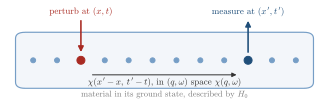

Advanced Quantum Materials 2027 · All lectures · Lecture notes
Session 9. Excitations and Defects in Quantum Materials
9.1 Response functions as a probe of the ground state
Let us first set up the general experiment, since it will come back in every example of this session. We take a quantum material with a ground state that we understand, or that we think we understand, and we make a small perturbation at position \(x\) and time \(t\). Then we measure some observable at a different position \(x'\) and at a different time \(t'\), which is typically later. The relation between what we did at \((x,t)\) and what we observe at \((x',t')\) is contained in a response function. Once we know that function completely, we know how the material reacts to a perturbation applied at any place and at any time.

This point of view does not depend on the observable that we choose, and the same formalism describes the following cases.
A perturbation in the local electrostatic potential, measured as a change in the local charge density, which gives the dielectric function.
A local magnetic moment or field, measured as a change in the local magnetization at another place, which gives the magnetic susceptibility, also called the spin-fluctuation response.
A local change of temperature, measured as a change of temperature at another place, which gives the thermal conductance.
There are also two quite different ways to do this experiment in the lab, and we will use both in this session. The first way is a real physical perturbation. If we replace one atom of a metal by an atom of a different element, we have created a real, localized impurity. As we will see in detail in Section 9.6, the Friedel oscillations that appear in the electronic density show us directly the Fermi surface of the material. In the second way, the measurement itself is the perturbation. We send a neutron, whose magnetic moment couples to the local moments in a magnetic material, and the scattering cross-section that we record gives directly the magnetic fluctuations of the material, which is called inelastic neutron scattering. These two experiments look very different, but the formalism behind them, and the kind of information that we obtain, is the same in both cases.
Finally, a simplification makes almost everything below possible to compute. When the unperturbed Hamiltonian has translational symmetry in space and does not depend on time, the response function can only depend on \(x'-x\) and \(t'-t\), and not on \(x,t,x',t'\) separately. In this situation the natural language is to Fourier transform to reciprocal space and frequency, \((q,\omega)\), and this is the language that we will use for almost all the rest of this session.
A perturbation acts on one site of an infinite clean chain, and we measure on a site five lattice constants away. If we move both sites by ten lattice constants, the answer is the same. What does this tell us about the response function?
Show the answer
The correct option is B.
Translational symmetry means that only the difference \(x'-x\) matters. A function of the difference becomes diagonal after a Fourier transform, meaning that every \(q\) responds on its own. This is why the rest of the session works in \((q,\omega)\).